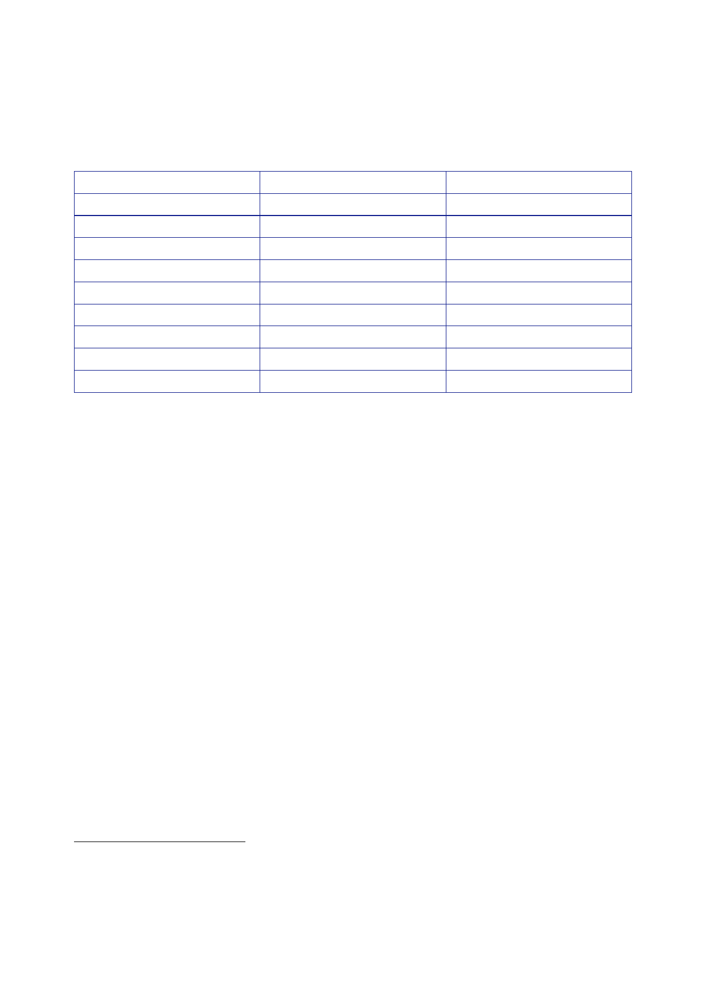

9.5 |
June 2006 to 27 June 2007
Construction,
the Environment, Women’s Affairs and Human Rights.17
Six
ministers were
considered
to be Sadrists.
Post
Prime
Minister
Deputy
PM
Deputy
PM
Defence
Minister
Interior
Minister
National
Security Minister
Oil
Minister
Foreign
Minister
Justice
Minister
Name
Mr Nuri
al‑Maliki
Dr Barham
Salih
Mr Salam
Zaubai
Lt Gen
Abdul Qadir Obeidi
Mr Jawad
Bulani
Mr Shirwan
Wail
Mr Hussain
al‑Shahristani
Mr Hoshyar
Zebari
Mr Hashim
al‑Shebli
Party
Dawa
(Shia)
PUK
(Kurdish)
IAF
(Sunni)
(Sunni)
(Shia)
(Shia)
(Shia)
KDP
(Kurdish)
(Sunni)
17.
Mr Dominic
Asquith, who succeeded Mr Patey as British Ambassador to Iraq
in
August
2006, told the Inquiry that the delay in agreeing the composition
of the Cabinet
had a
significant impact on Prime Minister Maliki’s performance as a
leader.19
In
Mr Asquith’s
view, Mr Maliki had never felt confident that he commanded
“the loyalty
even of
those within his own Shia Alliance” and “was always concerned about
the risk
that other
political leaders were about to undermine him”.
18.
In mid‑June,
Prime Minister Maliki formally launched the Baghdad Security
Plan.20
Its key
elements included:
•
achieving
broad political engagement, with Prime Minister Maliki and
the
Minister of
the Interior closely involved;
•
communication
with the local population, including directly by the Iraqi
Security
Forces
(ISF), to build trust;
•
initial
operations and checkpoints to demonstrate an integrated
Multi‑National
Force
(MNF), Iraqi Army and Iraqi Police Service approach to security, in
which
Iraqis were
seen to be taking the lead;
•
increased
patrols throughout Baghdad to develop early warning and
intelligence,
and 24‑hour
continuous patrolling to deter violence;
•
targeted
and intelligence‑led offensive operations to neutralise insurgents;
and
17
Associated
Press, 20 May
2006, List of
Iraqi Cabinet Ministers.
18
BBC
News, 22 May
2006, Who’s who
in Iraq’s new cabinet.
19
Public
hearing, 4 December 2009, page 38.
20
BBC
News, 14 June
2006, Iraq
implements new security plan.
5